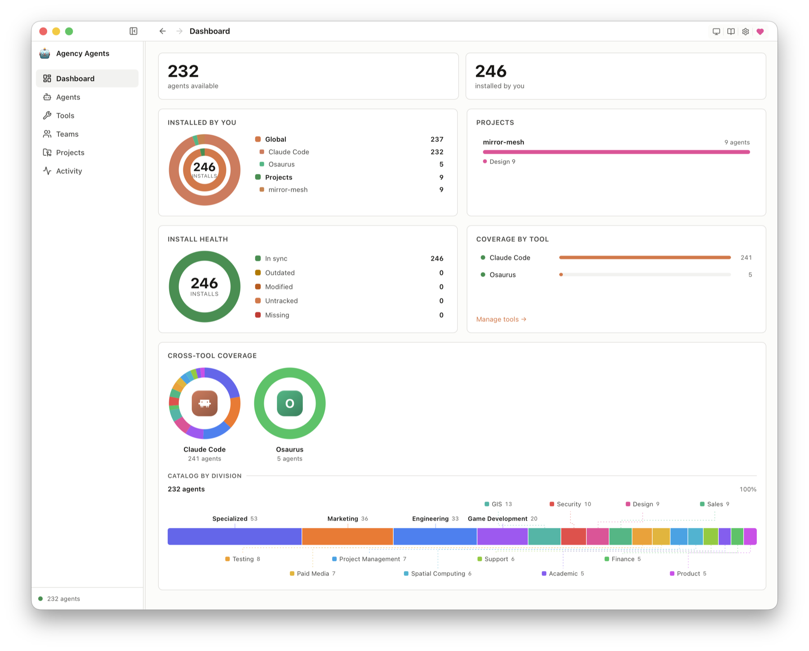

别被"232个AI专家"唬住：Agency-Agents是神器还是提示词大礼包？
一个 Reddit 帖子，攒出 12.7 万 Star
先看一组数字。GitHub 上有个叫 agency-agents 的仓库，昵称"The Agency"，攒到了约 12.7 万 Star、2.07 万 Fork。它的起点，不过是作者 Michael Sitarzewski 在 Reddit 上发的一个关于"AI agent 专业化"的帖子——上线 12 小时就收到 50+ 请求，然后一路滚到今天的 232 个 AI 专家、横跨 16 个部门。
它的中文社区版 agency-agents-zh 也不遑多让，攒了约 1.66 万 Star，还额外做了 50 个专为中国市场设计的原创角色。
这类项目最容易踩两个极端：吹的人说它是"你的 AI 梦之队""一个人干一家公司"；踩的人说它不过是"换皮的提示词合集"。那它到底是什么？值不值得装？这篇文章不带情绪，把它拆开给你看——包括一个很多推广文章刻意回避的问题：它真能提效吗？
先纠正一个最大的误解：它不是"框架"
很多人一看到"多个 AI agent 协作"，第一反应是把它归到 CrewAI、AutoGen、LangGraph 或 agency-swarm 那一类。这是错的。
那些是运行时编排框架——你写 Python 代码，定义 agent、状态、通信、循环，跑起来是一套活的系统。而 Agency-Agents 的本质完全不同：
它是一套人格化的 AI 专家"角色定义"文件库（一堆 markdown），装进你现有的 AI 编程工具后，用自然语言激活。
换句话说，它没有运行时、没有编排逻辑、不跑 Python 循环。它交付的是"人设 + 说明书"，真正干活的是你手里的 Claude Code、Cursor 或 Copilot。从代码构成也能看出来：整个仓库 85% 是 Shell 脚本、13% 是 Python——这些几乎全是"格式转换 + 一键安装"的工具脚本，而不是 agent 运行逻辑。
想清楚这一点，才能公正地评价它：它属于"提示词工程"的范畴，而不是"agent 运行框架"的范畴。 拿它跟 LangGraph 比"编排能力"，纯属打错靶子。关于真正的多智能体编排框架怎么选，可以看我们另一篇《2026 多智能体协作框架选型指南》。
那它凭什么不是"提示词大礼包"？
这是全文的核心争议。如果只是把"你是一个前端工程师"存成 100 个 txt 文件，那确实是大礼包。但 Agency-Agents 的每个角色文件，结构上远比一句话提示词重：
- 身份与人设（Identity & Personality）：独立的性格、语气、沟通风格
- 核心使命（Core Mission）：这个角色到底为什么存在
- 关键规则（Critical Rules）：领域专属的硬约束。比如"安全工程师"会按 OWASP Top 10 逐项审查代码；"最小改动工程师"的铁律是"只改被要求的地方，绝不扩大范围"
- 技术交付物（Deliverables）：带真实代码示例的具体产出，不是空泛建议
- 工作流程（Workflow）：分步骤的做事流程
- 成功指标（Success Metrics）：什么算做好了
用一句话概括官方的设计哲学：普通提示词告诉 AI"你是谁"，Agency 定义了这个专家"怎么思考、怎么做事、交付什么、以及怎么算做到位"。
所以我的判断是：它比"裸提示词"重得多，但也确实没有超出"提示词工程"的边界。 它的价值不在于"发明了新技术"，而在于"把结构化的专家提示词，做成了规模化、可复用、社区共建的资产"。这是工程化的胜利，不是技术突破。
232 个专家，16 个部门都有啥
要理解它的应用场景，先扫一遍它的"组织架构"。16 个部门大致分三类：
硬核工程类：工程部（前端、后端架构师、SRE、数据库优化、代码审查、嵌入式固件、Solidity 智能合约、网络工程师）、安全部（威胁建模、渗透测试、云安全、应急响应、合规审计）、测试部（性能基准、API 测试、无障碍审核、现实检验者）。
产品设计类：设计部（UI/UX、品牌守护、趣味注入师）、产品部（产品经理、趋势研究、反馈分析）、项目管理部。
业务增长类：营销部（增长黑客、各平台运营）、付费媒体部（PPC、搜索词分析、追踪归因）、销售部（MEDDPICC 赢单策略、售前工程师）、支持部、金融部（财务分析、税务策略、投资研究）。
垂直/前沿类：游戏开发部（Unity/Unreal/Godot/Roblox 全引擎覆盖）、空间计算部（visionOS、WebXR）、GIS 部（13 个地理空间角色）、学术部（人类学家、历史学家用于世界观构建）、专项部（MCP 构建器、提示词工程师、区块链审计等"不好归类"的专家）。
覆盖面确实夸张——从写智能合约到运营小红书，从渗透测试到高考志愿。这既是它的卖点，也埋着隐患（后面讲）。
它到底能兼容哪些工具？
这是它能火的真正关键——不绑定任何单一工具，装进你已有的全家桶就行。原生支持 14+ 种主流 Agentic 编程工具：
Claude Code、GitHub Copilot、Cursor、Codex、Gemini CLI / Antigravity、OpenCode、OpenClaw、Aider、Windsurf、Qwen Code、Kimi Code、Osaurus、Hermes、Mistral Vibe。
安装也简单，两步：./scripts/convert.sh 生成对应工具格式，./scripts/install.sh 交互式选择安装（自动检测你装了哪些工具）。Claude Code 和 Copilot 甚至可以直接复制 .md 文件到 ~/.claude/agents/，零转换。嫌命令行麻烦的，还有原生桌面 App（agencyagents.app，一键安装 + 自动更新）。

上图是官方桌面客户端的仪表盘——不用克隆仓库、不碰终端，直接可视化浏览整个角色库，勾选工具后一键安装并自动更新。对不熟悉命令行的运营、设计岗来说，这大大降低了上手门槛。
如果你还在纠结 Claude Code、Cursor、Copilot 这些工具本身怎么选，可以先看《2026 闭源 AI 编程工具横评》；偏爱免费开源路线的，参考《OpenCode 免费 AI 编程 Agent 指南》。
⚠️ 一个真实的坑：OpenCode 运行时目前只注册约 119 个 agent，超出的会被静默丢弃（上游 bug）。装满 232 个反而可能出问题，得用
--division engineering,security这种方式只装你需要的部门。"角色太多"本身就是一种成本。
官方给的 6 大应用场景
Agency-Agents 的核心主张是"组队协作"——不是让一个万能 agent 干所有事，而是让多个专家分工。README 给了 6 个范例：
场景 1 · 创业 MVP：前端开发者 + 后端架构师 + 增长黑客 + 快速原型师 + 现实检验者，从建应用到上线质量把关一条龙。
场景 2 · 营销活动：内容创作者 + Twitter/Instagram/Reddit 运营 + 数据分析师，多渠道协同。
场景 3 · 企业功能开发：高级项目经理（拆需求）+ 高级开发（实现）+ UI 设计 + 实验追踪 + 证据收集 + 现实检验者（生产就绪认证），带质量关卡。
场景 4 · 付费广告账户接管：审计师 → 追踪校验 → 重构账户 → 清理搜索词浪费 → 刷新创意，宣称"30 天内系统化完成"。
场景 5 · 全公司产品发现（旗舰案例）：8 个 agent 同时上阵（趋势研究、后端架构、品牌、增长、支持、UX、项目、XR 界面），一个 session 产出覆盖市场验证、技术架构、品牌策略、GTM、UX 研究、项目执行的统一产品蓝图。
场景 6 · 智慧园区数字孪生：7 个 GIS/BIM/无人机测绘 agent 组成交付流水线。
这些场景的共性是：把一个复杂目标，拆成多个专业角色的并行/流水线协作。 逻辑上是成立的——这正好对应了 Claude Code 等工具的 Subagent 机制。
它到底能不能提效？
很多推广文章会给你一个诱人的百分比，但如果你去翻项目仓库，会发现一个需要正视的事实：Agency-Agents 并没有公布任何严谨的量化提效数据。
它公开的数字——232 个角色、12.7 万 Star、Reddit 上线 12 小时 50+ 请求——衡量的是"多少人喜欢它"，而不是"它让你快了多少"。README 里偶尔出现的类似"减少 40% 完成焦虑"的说法，其实是写在角色人设里的示例台词，并非真实测量。所以，如果你在别处看到"用了它效率翻倍"之类的结论，不妨多留个心眼。
不过，没有实测百分比，不代表它没用。要判断它对你有没有价值，关键是看清它提效的机制——而这套机制的功劳，其实主要来自底层工具（Claude Code、Cursor 等）的 Subagent 能力：
- 独立上下文窗口：每个专业角色在自己的上下文里工作，不会把主对话越堆越乱。这是多文件重构、大型审计、端到端功能开发这类长任务不"跑偏"的关键。
- 并行处理：多个专家可以同时推进各自的子任务，整体等待时间更短。
- 各司其职：每个角色只调用它该用的工具，误操作更少，产出的质量下限更稳。
Agency-Agents 的贡献，是给这套机制填进了高质量、结构化的专业内容。所以对它更公允的期待是：
它稳定的是"每一次产出的专业度和一致性"，而不是一个可以贴在海报上的"提速百分比"。
这也和整个行业的经验一致：AI 编程助手在边界清晰的具体任务上确实能帮上忙，但离"无所不能"还很远，返工、审查、幻觉这些隐藏成本依然存在（我们在《Vibe Coding 的隐藏代价与安全风险》里专门拆过）。
所以，别把它当成"装上就效率翻倍"的开关。把它理解成给你的 AI 配了一套"专业岗位说明书"更贴切——它能不能帮到你，取决于你的任务是否对得上、模型底座够不够强、以及你会不会组织这些角色协作。
中文生态：agency-agents-zh 更值得国内用户关注
如果你在国内做开发或运营，中文版 agency-agents-zh（作者 @jnMetaCode）可能比英文原版更实用：
- 266 个角色：215 个翻译自上游 + 50 个中国市场原创。
- 原创角色极接地气：小红书/抖音/微信公众号/视频号/小程序/B站/快手/微博/知乎运营、飞书/钉钉集成开发、跨境电商、政务 ToG 售前（含等保/信创）、医疗营销合规、高考志愿填报、Qt 工业上位机、机械设计等。
- 多支持国产工具：除了国际工具，还适配 Kiro（Amazon）、Trae、WorkBuddy（腾讯）、DeerFlow 2.0（字节跳动）、CodeWhale（原 DeepSeek-TUI）、Qoder。
- 配套编排器
agency-orchestrator：这是关键补强。前面说 Agency-Agents 没有运行时，而这个 npm 包/桌面 App 恰好补上了——ao compose "写一篇AI分析文章" --run，一句话让多个专家按 DAG 并行协作、断点续跑，支持 10 种大模型（7 种免 key）。它把"角色库"真正变成了"能自动干活的团队"。
对国内用户来说，"小红书运营专家 + 内容创作者 + 品牌守护者 + 数据分析师"这种组合，显然比翻译腔的英文角色更能直接用。
神器还是大礼包？
回到开头的问题，答案其实是：都不是。更准确的定位，是一套被低估的"提示词工程基础设施"。
- 把它捧成神器，夸大了——它没有任何技术突破，也没有可验证的提效奇迹，本质仍是提示词。
- 把它贬成大礼包，又低估了——它把散乱的专家提示词，做成了结构化、跨工具、社区共建、可持续演进的资产，这份工程价值很扎实。
与其纠结这个标签，不如直接对照下面两份清单，看看它到底适不适合你。
如果你是这几类人，值得一试：
- ✅ 已经在重度使用 Claude Code / Cursor，想要更专业、更一致产出的开发者
- ✅ 需要"跨领域"能力（一会儿写代码、一会儿做营销）的独立开发者、小团队
- ✅ 想学"高质量角色提示词怎么写"的人——它就是最好的免费教材（MIT 协议，可商用）
如果你属于下面几种情况，可能会失望：
- ❌ 指望"装上就自动提效翻倍"
- ❌ 需要真正的运行时编排（复杂状态、循环、工具调用链）——那更该用 LangGraph、CrewAI，或直接上配套的 orchestrator
- ❌ 只用某个不受支持的小众工具，或会被 agent 数量上限困扰
记住一句话就够了：它不会让平庸的 AI 变强，但能让强的 AI 更稳、更专业、更少跑偏。 把它当"提示词工程的脚手架"，而不是"魔法棒"，你的预期就不会落空。
免责声明
本文基于对项目公开仓库（README、目录结构、脚本）及公开报道的整理与分析。文中 Star 数、角色数量等为撰写时的公开数据快照，会随项目持续更新而变化。请以项目官方仓库最新信息为准。
参考来源
- msitarzewski/agency-agents — GitHub 官方仓库
- jnMetaCode/agency-agents-zh — 中文社区版仓库
- Agency Agents: Transform Your IDE into a Multi-Agent AI Studio — yuv.ai
- What Is The Agency Agents? — Apidog
- Someone Built a Full AI Agency on GitHub — Medium (Coding Nexus)
- Agency-Agents: AI Specialist Framework — DecisionCrafters
- Claude Code Subagents: A 2026 Practical Guide — Tembo
- Claude Code multiple agent systems: Complete 2026 guide — eesel.ai
- Agentic Coding Patterns: What Works vs. What Fails — Anthropic Artifact
相关阅读
- 2026 闭源 AI 编程工具横评
- OpenCode 免费 AI 编程 Agent 指南
- 手机端也能跑的编程 Agent：Cursor、Trae、OpenClaw
- Vibe Coding 的隐藏代价与安全风险
- 2026 多智能体协作框架选型指南
推荐搭配装备
善其事，利其器。以下硬件能最大化你的AI体验👇
🔗 通过以上链接购买可支持本站持续运营 🙏